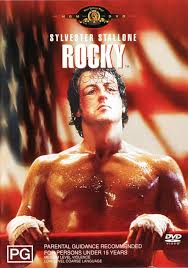
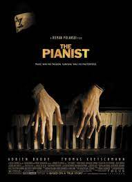

- The Shawshank Redemption
-
"The Shawshank Redemption" is a powerful film directed by Frank Darabont, based on a Stephen King novella. The story revolves around Andy Dufresne, a banker wrongly convicted of murder, and his experiences in Shawshank State Penitentiary. The film explores themes of hope, friendship, and resilience as Andy befriends fellow inmate Red and attempts to maintain his dignity within the harsh prison environment.
-

- Rocky
-
"Rocky" is a classic sports drama film directed by John G. Avildsen. The story follows Rocky Balboa, a down-and-out boxer from Philadelphia, who gets a shot at the heavyweight championship against the undefeated Apollo Creed. Filled with heart, determination, and the iconic training montage, the film captures Rocky's underdog journey and his pursuit of self-respect
- 
- The Pianist
-
"The Pianist" is a gripping war drama directed by Roman Polanski. Based on the true story of Władysław Szpilman, a Polish Jewish pianist, the film depicts his struggle for survival during the Holocaust in Warsaw.
- 